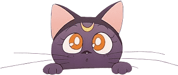

Sobre:
Usagi Tsukino, mais conhecida como Sailor Moon ou Navegante
da Lua, é a personagem principal do anime e mangá Sailor Moon.
É chamada de Serena Tsukino no Brasil e Bunny Tsukino em
Portugal. Devido a difusão da série ao redor do mundo, bem
como a seu penteado bastante semelhante "espaguete
"e almôndega", que a torna facilmente identificável, ela é
um dos personagensde anime mais conhecidos. Ela é o único
personagem a aparecer em todos os duzentos episódios da série Sailor Moon.
Informações Técnicas do Mangá:
- Escrito e ilustrado por: Naoko Takeuchi
- Editoração: Kodansha
- Editoração lusófona no Brasil: JBC
- Revistas: Nakayoshi e Run Run
- Demografia: Shōjo (Adolescente feminina)
- Período de publicação: 28 de dezembro de 1991 – 3 de fevereiro de 1997
- Volumes: 18 (edição Tankōbon), 12 (edição Shinsouban de 2003) e 10 (edição Kanzenban de 2013)
Personagens Principais:
Usagi Tsukino

Usagi Tsukino é a identidade civil da Guardiã do Amor e da Justiça, Sailor Moon. Originária de uma próspera civilização na Lua conhecida como Reino da Lua, ela renasceu na Terra e despertou novamente como a líder das Sailor Senshi. Usagi é um pouco egoísta e pode ser excessivamente dramática. Ela também é considerada uma preguiçosa. Além disso, ela também demonstrou ter ciúmes de Mamoru e tem o hábito de meter o nariz nos negócios dos outros.
Luna
Luna ou Lua é uma gata preta encontrada por Usagi ,foi ela que revelou a Usagi que ela era a Sailor Moon e tornou-se também sua companheira e guardiã, revelando também as outras Sailors perdidas. Futuramente ela irá casar-se com Artemis e terá como filha Diana.
Chibiusa Tsukino

Princesa Usagi “Chibiusa” é a identidade civil de Sailor Chibi Moon e a princesa da Terra do Século 30. Chibiusa era malcriada, ciumenta, um pouco mimada e muitas vezes brigava com Usagi, até pelas coisas mais simples. Ela estava ligada ao seu futuro pai, Mamoru, e mesmo depois da temporada R (relacionada ao mangá), ela ainda discutia com Usagi sobre Mamoru, embora não se soubesse se ela ainda estava ligada ou o fazia para incomodar Usagi.
Mamoru Chiba

Mamoru Chiba é a encarnação atual do Príncipe Endymion e da identidade civil de Tuxedo Mask. Mamoru era filho único e morou com seus pais até o dia de seu sexto aniversário, quando os três se envolveram em um acidente de carro, matando os pais, mas deixando Mamoru como único sobrevivente. No entanto, o incidente deu a Mamoru amnésia retrógrada, deixando-o incapaz de se lembrar de nada sobre sua vida antes do acidente de carro.
Hotaru Tomoe

Hotaru Tomoe é a identidade civil atual encarnação de Saturno. Após a derrota dos Death Busters e do Faraó 90, ela renasceu como um bebê e foi acolhida por seus companheiros Outer Sailor Guardians, mais tarde envelhecendo e despertando novamente como a Guardiã da Destruição.
Haruka Tenou

Haruka Tenou é a identidade civil de Sailor Uranus. Embora ela não faça uma aparição formal na segunda temporada, Haruka aparece em uma silhueta ao lado de Sailor Neptune no episódio final, que agiu como um “teaser” para a terceira temporada.
Rei Hino

Rei Hino é a identidade civil e a encarnação atual de Sailor Marte. Rei é uma sacerdotisa enlouquecida por meninos com ambições de se tornar cantora, compositora, modelo, dubladora e, eventualmente, se casar.
Minako Aino

Minako Aino é a identidade civil de Sailor V e a encarnação atual de Sailor Venus. Minako era uma personagem muito boba às vezes, mas ela poderia ser mais séria; isso foi especialmente verdadeiro na primeira temporada em geral, e especificamente nos episódios 42, 100 e 109 (nos quais ela se preocupou por não ter um Coração Puro e tentou provar que tinha um coração puro de algumas maneiras muito bizarras).
Makoto Kino

Makoto Kino é a identidade civil e a encarnação atual de Júpiter. Ela é a quarta Sailor Senshi a ser introduzida no anime. Makoto Kino é uma adolescente moleca que se transfere para a Juban Public Middle School na primeira temporada. Makoto perdeu seus pais em um acidente de avião quando era mais jovem e mora sozinha em um apartamento.
Veja a abertura original do Anime:
Ficou com vontade de assistir?
Assista gratuitamente a todos os episódios no portal Crunchyroll, clicando no botão abaixo: